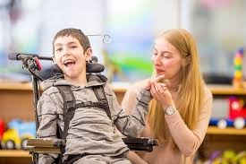
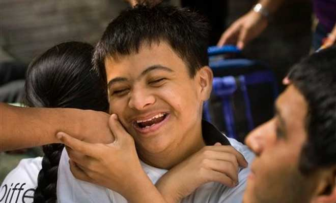
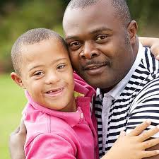

<div class="container">
  <mat-card class="card">
    <h1>HINT - A community for parents of neurodivergent children.</h1>
    <p>
      HINT is a web application for parents of children with conditions like
      palsy, Asperger's, Down's etc. The aim is to bring parents of such
      specially-abled children together to share their experiences, resources,
      tips etc. with others in the community.
    </p>
    <div class="images">
      
      
      
      
    </div>

    <p>Users logging on to the website have access to:</p>
    <ol>
      <li>
        Blogs and other content posted by various other users sharing their
        experiences, stories, resources etc. with comments as well.
      </li>
      <li>
        Location service for trained doctors and clinics: Since a persistent
        issue with parents is the lack of availability of capable neurologists,
        physiotherapists, counsellors etc., we provide information regarding the
        best doctors available near your location. The data is sourced from
        parents logging on to the site as well as our own resources.
      </li>
      <li>
        Location service for stores selling specialized equipment: Often,
        raising a child with special needs requires equipment like prosthetics,
        nebulizers, walkers etc. to help them function and lead normative lives.
        Stores for these are usually not easy to locate, which is why we provide
        locations for such stores nearest to users.
      </li>
      <li>
        Location service for schools: Children with special needs require
        dedicated instructors and a special curriculum and pedagogy - we help in
        locating such schools in users' neighborhoods.
      </li>
      <li>
        Location service for caretakes and daycare centres: Raising special
        needs children is an emotionally and physically taxing process, and is
        especially difficult for working parents. Hence, information about
        trained and experienced caretakers and daycare centres/creches around
        users is provided.
      </li>
    </ol>
    <p>
      We aim to make HINT a safe and resourceful community for parents of
      specially abled children, so they can find all the help they require for
      making their and their children's lives better and more convenient.
    </p>
  </mat-card>
</div>
